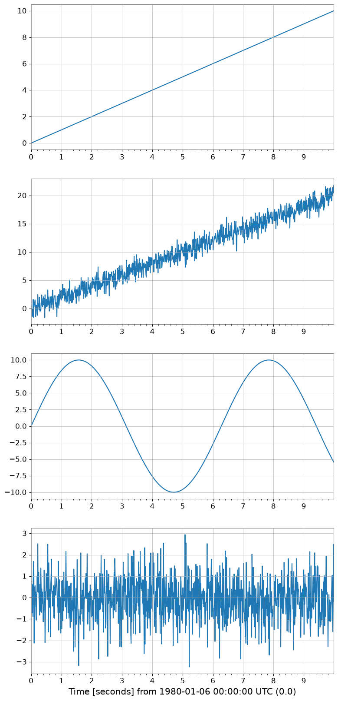
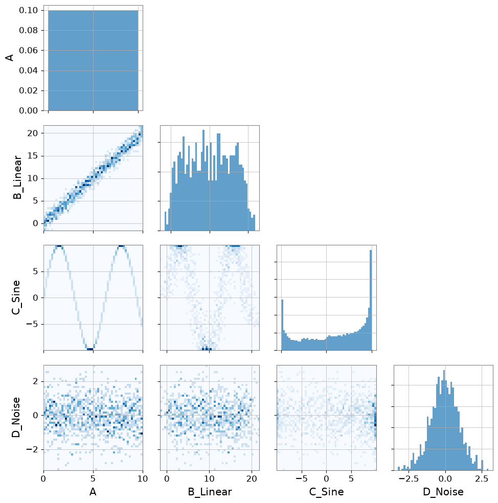
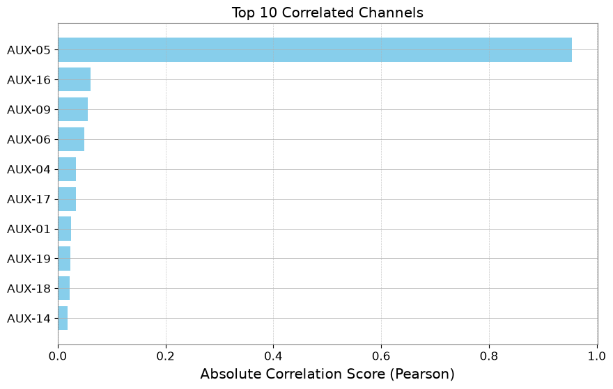
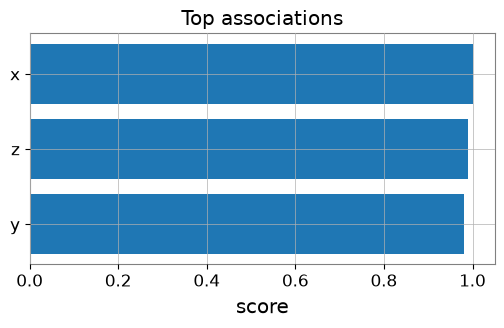
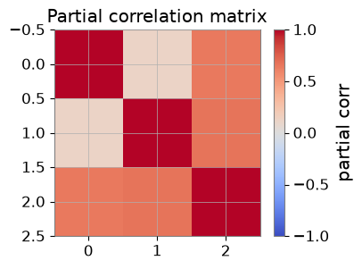
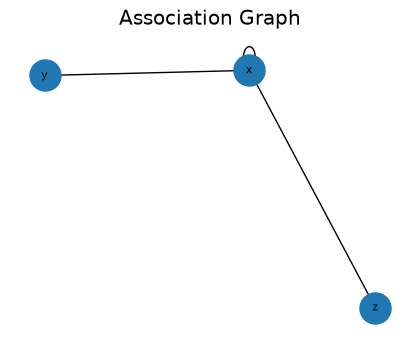
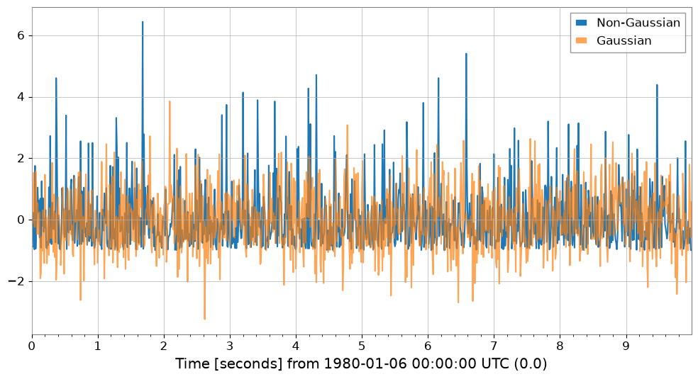

相関解析: 統計的手法#
gwexpyでは、TimeSeriesオブジェクト間の統計的相関を簡単に計算できます。これはノイズハンティングや非線形結合の調査に役立ちます。
サポートされている手法:
Pearson (PCC): 線形相関。
Kendall (Ktau): 順位相関（外れ値に強く、ノンパラメトリック）。
MIC: Maximal Information Coefficient（非線形関係に対してロバスト、
minepyが必要、python scripts/dev_tools/install_minepy.pyで構築）。
import warnings
warnings.filterwarnings("ignore", category=UserWarning)
warnings.filterwarnings("ignore", category=DeprecationWarning)
import matplotlib.pyplot as plt
import numpy as np
from gwexpy.plot import PairPlot, Plot
from gwexpy.timeseries import TimeSeries, TimeSeriesMatrix
ペアごとの相関#
# Create dummy data
t = np.linspace(0, 10, 1000)
# Linear relationship
ts_a = TimeSeries(t, dt=0.01, name="A")
ts_b = TimeSeries(t * 2 + np.random.normal(0, 1, 1000), dt=0.01, name="B_Linear")
# Nonlinear relationship (sine wave)
ts_c = TimeSeries(np.sin(t) * 10, dt=0.01, name="C_Sine")
# Random noise
ts_d = TimeSeries(np.random.normal(0, 1, 1000), dt=0.01, name="D_Noise")
Plot(ts_a, ts_b, ts_c, ts_d, separate=True, sharex=True);

# Visualization
pair = PairPlot([ts_a, ts_b, ts_c, ts_d], corner=True)
pair.show()

<gwexpy.plot.pairplot.PairPlot at 0x7f519a85cb90>
注 — 自動リサンプリング: 2 つの時系列のサンプルレートが異なる場合、gwexpy は一方をもう一方に合わせて自動的にリサンプリングし、
UserWarningを出力します。これを抑制するには、相関メソッドを呼ぶ前に両系列のサンプルレートを揃えてください。
print("Correlation A vs B (linear):")
print(f" Pearson: {ts_a.pcc(ts_b):.3f}")
print(f" Kendall: {ts_a.ktau(ts_b):.3f}")
try:
print(f" MIC: {ts_a.mic(ts_b):.3f}")
except ImportError:
from IPython.display import Markdown, display
display(Markdown("""
**Note**: MIC: (minepy not available)
"""))
Correlation A vs B (linear):
Pearson: 0.985
Kendall: 0.893
**Note**: MIC: (minepy not available)
print("Correlation A vs C (nonlinear sine wave):")
print(f" Pearson: {ts_a.pcc(ts_c):.3f} (linear correlation cannot capture structure)")
print(f" Kendall: {ts_a.ktau(ts_c):.3f}")
try:
print(f" MIC: {ts_a.mic(ts_c):.3f} (captures nonlinear dependency)")
except ImportError:
from IPython.display import Markdown, display
display(Markdown("""
**Note**: MIC: (minepy not available)
"""))
Correlation A vs C (nonlinear sine wave):
Pearson: -0.071 (linear correlation cannot capture structure)
Kendall: -0.053
**Note**: MIC: (minepy not available)
相関ベクトル (ノイズハンティング)#
ノイズ源を調査する際、ターゲットチャンネル（例：DARM）と数百の補助チャンネルとの間の相関を確認したいことがよくあります。 TimeSeriesMatrix.correlation_vector はこのランキングを効率的に計算します。
# Create a Matrix with many auxiliary channels
n_channels = 20
data = np.random.randn(n_channels, 1, 1000)
names = [f"AUX-{i:02d}" for i in range(n_channels)]
# Inject signals into AUX-05 and AUX-12
target_signal = np.sin(np.linspace(0, 20, 1000))
data[5, 0, :] += target_signal * 5 # Strong coupling
data[12, 0, :] += target_signal**2 * 5 # Nonlinear coupling
matrix = TimeSeriesMatrix(data, dt=0.01, channel_names=names)
# Target channel
target = TimeSeries(
target_signal + np.random.normal(0, 0.1, 1000), dt=0.01, name="TARGET"
)
# Compute correlation vector
# Use 'mic' to capture both linear and nonlinear (slower but powerful)
# Use 'pearson' for speed
try:
print("Computing MIC vector (Top 5)...")
df_mic = matrix.correlation_vector(target, method="mic", parallel=2)
print(df_mic.head(5))
except ImportError:
from IPython.display import Markdown, display
display(Markdown("""
**Note**: Skipping MIC example because minepy is not installed.
"""))
Computing MIC vector (Top 5)...
**Note**: Skipping MIC example because minepy is not installed.
print("Computing Pearson vector (Top 5)...")
df_pcc = matrix.correlation_vector(target, method="pearson", parallel=1)
print(df_pcc.head(5))
Computing Pearson vector (Top 5)...
row col channel score
0 5 0 AUX-05 0.953721
1 16 0 AUX-16 0.061112
2 9 0 AUX-09 0.055519
3 6 0 AUX-06 0.049064
4 4 0 AUX-04 -0.033787
# Visualize ranking (Top 10)
df_plot = df_pcc.head(10).iloc[::-1] # Reverse to descending order
plt.figure(figsize=(10, 6))
plt.barh(df_plot["channel"], np.abs(df_plot["score"]), color="skyblue")
plt.xlabel("Absolute Correlation Score (Pearson)")
plt.title("Top 10 Correlated Channels")
plt.grid(axis="x", linestyle="--", alpha=0.7)
plt.show()

偏相関（共通要因の除去）#
共通の要因を取り除いて、直接的な結びつきを評価します。
import numpy as np
from gwexpy.timeseries import TimeSeries
rng = np.random.default_rng(0)
t = np.linspace(0, 10, 1000)
z = np.sin(2 * np.pi * 0.5 * t) + 0.1 * rng.standard_normal(t.size)
x = z + 0.1 * rng.standard_normal(t.size)
y = z + 0.1 * rng.standard_normal(t.size)
ts_x = TimeSeries(x, dt=t[1] - t[0], name="x")
ts_y = TimeSeries(y, dt=t[1] - t[0], name="y")
ts_z = TimeSeries(z, dt=t[1] - t[0], name="z")
print("corr(x,y):", ts_x.correlation(ts_y, method="pearson"))
print("partial corr(x,y|z):", ts_x.partial_correlation(ts_y, controls=ts_z, method="residual"))
corr(x,y): 0.9809075921667307
partial corr(x,y|z): 0.004410452860247914
Association Edges / グラフ化#
ターゲット時系列に対して行列の各チャンネルを評価し、エッジを作成します。
from gwexpy.analysis import association_edges, build_graph
from gwexpy.timeseries import TimeSeriesMatrix
matrix = TimeSeriesMatrix(
np.stack([x, y, z], axis=0)[:, None, :],
dt=t[1] - t[0],
channel_names=["x", "y", "z"],
)
edges = association_edges(ts_x, matrix, method="pearson", topk=3)
print("Association edges:\n", edges)
pcorr = matrix.partial_correlation_matrix(shrinkage="auto")
print("Partial correlation matrix:\n", pcorr)
# If networkx is available:
graph = build_graph(edges, backend="none")
print("Graph built successfully.")
Association edges:
row col channel score source target
0 0 0 x 1.000000 x x
1 2 0 z 0.989968 x z
2 1 0 y 0.980908 x y
Partial correlation matrix:
[[1. 0.12171043 0.64439827]
[0.12171043 1. 0.67130111]
[0.64439827 0.67130111 1. ]]
Graph built successfully.
可視化: エッジランキングと偏相関ヒートマップ#
import matplotlib.pyplot as plt
# Bar plot of top edges
top = edges.sort_values('score', ascending=False, key=abs).head(10)
plt.figure(figsize=(6, 3))
plt.barh(top['target'], top['score'])
plt.gca().invert_yaxis()
plt.xlabel('score')
plt.title('Top associations')
plt.show()
# Heatmap of partial correlation
plt.figure(figsize=(4, 3))
im = plt.imshow(pcorr, vmin=-1, vmax=1, cmap='coolwarm')
plt.colorbar(mappable=im, label='partial corr')
plt.title('Partial correlation matrix')
plt.show()


FastMI（実験的）#
FastMI は、copula（経験CDF）+ probit 変換 + FFT ベースの self-consistent 密度推定を用いた相互情報量 (MI) 推定です。
API:
TimeSeries.fastmi(other, grid_size=..., quantile=..., eps=...)またはcorrelation(other, method="fastmi")出力: MI（nats、0以上）。値が大きいほど依存が強い（線形/非線形を問わない）。
パラメータ:
grid_size: FFT グリッド分解能（精度と速度のトレードオフ）。quantile: probit の極端な裾をトリムして安定化。eps:log(0)回避のための下限。
# fastMI (copula/probit + FFT-based MI estimator)
# NOTE: this can be slower than Pearson for small n, but is useful for nonlinear dependence.
print('fastMI(x,y):', ts_x.fastmi(ts_y, grid_size=128))
print('fastMI(x,z):', ts_x.fastmi(ts_z, grid_size=128))
fastMI(x,y): 0.08925170168547956
fastMI(x,z): 0.11320579203180092
CAGMon 風の Association Graph（最小実装）#
エッジリストからグラフを作り、必要なら可視化します。
# If networkx is available, you can visualize the association graph
try:
import networkx as nx
G = build_graph(edges, backend='networkx')
plt.figure(figsize=(4, 3))
pos = nx.spring_layout(G, seed=0)
nx.draw(G, pos, with_labels=True, node_size=500, font_size=8)
plt.title('Association Graph')
plt.show()
except Exception as e:
print('Graph plot skipped:', e)

高度な統計解析 (Advanced Statistics)#
gwexpyは、相関だけでなく、データの分布形状や因果関係を調べるための高度な統計機能も提供しています。
Skewness (歪度): 分布の非対称性。
Kurtosis (尖度): 分布の裾の重さ（外れ値の多さ）。
Distance Correlation (dCor): 非線形な依存関係の尺度。
Granger Causality: 時系列間の因果関係（予測への寄与）。
非ガウス性ノイズの検出 (Skewness / Kurtosis)#
# Generate Gaussian noise and non-Gaussian noise (exponential distribution)
np.random.seed(42)
gauss_noise = TimeSeries(np.random.normal(0, 1, 1000), dt=0.01, name="Gaussian")
exp_noise = TimeSeries(
np.random.exponential(1, 1000) - 1, dt=0.01, name="Non-Gaussian"
) # Centered
# Plot
plot = exp_noise.plot(label="Non-Gaussian")
plot.gca().plot(gauss_noise, label="Gaussian", alpha=0.7)
plot.gca().legend()
plot.show()
# Calculate statistics
print(
f"Gaussian: Skewness={gauss_noise.skewness():.3f}, Kurtosis={gauss_noise.kurtosis():.3f}"
)
print(
f"Non-Gaussian: Skewness={exp_noise.skewness():.3f}, Kurtosis={exp_noise.kurtosis():.3f}"
)
print("Note: Gaussian distributions have Skewness~0, Kurtosis~0 (Fisher definition).")

Gaussian: Skewness=0.117, Kurtosis=0.066
Non-Gaussian: Skewness=1.981, Kurtosis=5.379
Note: Gaussian distributions have Skewness~0, Kurtosis~0 (Fisher definition).
非線形依存性の検出 (Distance Correlation)#
先ほどの正弦波データ(ts_c)と線形データ(ts_a)の関係をdCorで見てみましょう。Pearson相関では捉えられなかった関係が検出できます。
try:
dcor_val = ts_a.distance_correlation(ts_c)
print(f"Distance Correlation (A vs C): {dcor_val:.3f}")
print(f"Pearson Correlation (A vs C): {ts_a.pcc(ts_c):.3f}")
except ImportError:
from IPython.display import Markdown, display
display(Markdown("""
**Note**: dcor package is not installed. Install it with: pip install dcor
"""))
Distance Correlation (A vs C): 0.381
Pearson Correlation (A vs C): -0.071
因果関係の推定 (Granger Causality)#
ある時系列の過去の値が、別の時系列の未来の値を予測するのに役立つかどうかを検定します。
# Generate data with causal relationship (X -> Y)
np.random.seed(0)
n = 200
x_val = np.random.randn(n)
y_val = np.zeros(n)
# Y depends on the value of X one step before
for i in range(1, n):
y_val[i] = 0.5 * y_val[i - 1] + 0.8 * x_val[i - 1] + 0.1 * np.random.randn()
ts_x = TimeSeries(x_val, dt=1, name="Cause (X)")
ts_y = TimeSeries(y_val, dt=1, name="Effect (Y)")
try:
# Does X cause Y? (Does X help predict Y?) -> p-value should be small
p_xy = ts_y.granger_causality(ts_x, maxlag=5)
# Does Y cause X? -> p-value should be large
p_yx = ts_x.granger_causality(ts_y, maxlag=5)
print(
f"Granger Causality X -> Y (p-value): {p_xy:.4f} {'(Significant)' if p_xy < 0.05 else ''}"
)
print(
f"Granger Causality Y -> X (p-value): {p_yx:.4f} {'(Significant)' if p_yx < 0.05 else ''}"
)
except ImportError:
from IPython.display import Markdown, display
display(Markdown("""
**Note**: The statsmodels package is not installed. To perform Granger causality analysis:
```bash
pip install statsmodels
```
You can continue with the rest of the notebook.
"""))
Granger Causality X -> Y (p-value): 0.0000 (Significant)
Granger Causality Y -> X (p-value): 0.0907
高速相互情報量推定 (fastmi)#
fastmi は、コピュラ（Copula）定式化、プロビット（Probit）変換、およびFFTベースの密度推定に基づく高速な相互情報量（Mutual Information）推定器です。Pearson相関が見逃す可能性のある複雑な非線形依存関係を捉えることができます。
ts_y_aligned = ts_y.resample(ts_x.sample_rate.value)
ts_z_aligned = ts_z.resample(ts_x.sample_rate.value)
mi_xy = ts_x.fastmi(ts_y_aligned, grid_size=128)
mi_xz = ts_x.fastmi(ts_z_aligned, grid_size=128)
print(f"Mutual Information (x, y): {mi_xy:.4f} nats")
print(f"Mutual Information (x, z): {mi_xz:.4f} nats")
Mutual Information (x, y): 0.0195 nats
Mutual Information (x, z): 0.0000 nats